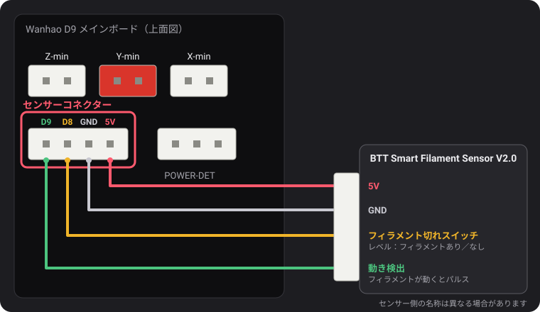
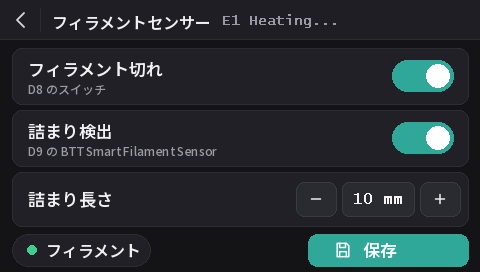

フィラメントセンサー
v2.0.5 以降、このファームウェアは 2 種類のセンサーを読み取れます。Wanhao のフィラメント切れスイッチと、フィラメントが動かなくなったこと（スプールの絡まり、詰まり、フィラメントの削れ）も検知する BTT Smart Filament Sensor V2.0 です。フィラメント切れ検出は全モデルでデフォルト有効で、詰まり検出は無効です。
センサーコネクター

POWER-DET の左、エンドストップ用コネクターの下にある 4 ピンのコネクターには、D9、D8、GND、5V がこの順に並んでいます。ピン名は、dustovich さんが見つけて Discord で共有してくれた Wanhao の配線図によるものです。ボードの裏面には、同じ 4 本のピンが CTRL、BTN、GND、VCC と印字されています。
- D8 は、Wanhao 純正ファームウェアが読み取るフィラメント切れ入力です。
- D9 は Wanhao のファームウェアでは使われていません。このビルドでは、ここで BTT センサーの動き検出信号を読み取ります。
画面から設定する
画面に DGUS Reloaded 2.0 を入れている場合（ファームウェア v2.0.9 以降）：設定 → フィラメント → フィラメントセンサー。
- フィラメント切れは、すべての検出をオン／オフします。
M412 S1/M412 S0と同じです。 - 詰まり検出は、下の長さで詰まり検出をオンにするか、オフ（
L0）にします。 - 詰まり長さ：− と + で 1 mm ずつ変更します。数値をタップすると直接入力できます。
- フィラメントの丸印は、フィラメント切れスイッチがフィラメントを検知しているときは緑、検知していないときは赤になります。
- 変更はすぐに反映されます。保存で保存されます（
M500と同じ）。戻る矢印で抜けると保存されず、次回の起動時に保存済みの設定に戻ります。

M412 コマンド
設定はすべて、シリアルターミナル（Pronterface、スライサーや OctoPrint のターミナル、250000 bps）から USB 経由で行います。パラメーターは 1 つのコマンドにまとめられます。例：M412 S1 L10。
| コマンド | 機能 |
|---|---|
M412 | 状態を表示します。例：Filament runout ON ; Distance 5.00mm ; Motion distance 0.00mm。 |
M412 S1 | 検出を有効にします：フィラメント切れスイッチと、詰まり長さが 0 でなければ詰まり検出も有効になります。 |
M412 S0 | スイッチと詰まりのすべての検出を無効にします。 |
M412 D5 | スイッチがフィラメントなしを検知してから 5 mm 印刷を続けて一時停止し、センサーとノズルの間に残ったフィラメントを使い切ります。デフォルトは 5 mm。 |
M412 L10 | 詰まり検出を有効にします（BTT センサーのみ）：センサーのホイールが回らないまま 10 mm のフィラメントがエクストルーダーを通過すると一時停止します。 |
M412 L0 | 詰まり検出を無効にします。フィラメント切れスイッチはそのままです。これがデフォルトです。 |
M500 | 設定を保存します。保存しないと、電源を切ったときに変更が失われます。 |
M119 | filament の行は、フィラメントが入っていると TRIGGERED、入っていないと open になります。 |
M412 L0 と、L を単独で使う機能は、私たちが Marlin に加えた変更（MarlinFirmware/Marlin#28585）によるもので、このファームウェアに組み込まれています。この変更のない Marlin では、単独の L
は無視され、L0 はすぐに詰まりとして印刷を一時停止してしまいます。
Wanhao のフィラメント切れスイッチ
フィラメントがあるかどうかをファームウェアに伝えます。フィラメントがなくなると、さらに 5 mm 分のフィラメントを使ったところで印刷が一時停止し、画面でフィラメント交換が始まります。
v2.0.8 以降、全モデルでデフォルト有効です。D8 に何も接続されていないときは、ボードのプルアップによってピンが 5 V に保たれ、「フィラメントあり」と読み取られます。そのため検出が作動することはなく、センサーの有無にかかわらず有効のままにしておけます。D8 にフィラメント切れスイッチを接続すれば、そのまま動作します。
- 詰まり検出は無効のままです（
L0）：このスイッチではフィラメントの動きを検知できません。 - スイッチを無効にするには：
M412 S0のあとM500。 - 以前のリリースで保存された設定は、オン／オフの状態がそのまま残ります。有効にするには：
M412 S1のあとM500、またはデフォルトに戻します（M502のあとM500。プローブの Z オフセットとメッシュも消去されます）。
BTT Smart Filament Sensor V2.0
このセンサーには出力が 2 つあり、ファームウェアはそれぞれを異なる方法で読み取ります：
- フィラメント切れスイッチ（D8 へ）はレベル信号です：フィラメントがある間は 5 V、なくなると 0 V になります。
- 動き検出出力（D9 へ）は、通過するフィラメントによって回る小さなホイールから出ています。フィラメントが数ミリ進むごとに、出力が 0 V と 5 V の間で切り替わります。ファームウェアが見ているのはこの切り替わりだけです。エクストルーダーが詰まり長さ分のフィラメントを押し出しても一度も切り替わらなければ、フィラメントが付いてきていない（スプールの絡まり、詰まり、フィラメントの削れ）ということなので、印刷を一時停止します。フィラメント切れスイッチではこれを検知できません：詰まっている間もフィラメントはそこにあるからです。
配線
5V を 5V に、GND を GND に、フィラメント切れスイッチの信号を D8 に、動き検出の信号を D9 に接続します。センサーのケーブルに印字された名前は異なる場合があります。
有効にする
M412 S1 L10
M500理由もなく印刷が一時停止する場合は、詰まり長さを大きくしてください：M412 L15 のあと M500。フィラメント切れスイッチだけを使う場合：M412 L0 のあと M500。
動作確認
M412：Filament runout ON ; Distance 5.00mm ; Motion distance 10.00mm。- フィラメントを入れた状態で
M119：filament: TRIGGERED。この行が、フィラメントを挿入・取り外したときではなく、手でフィラメントを押し込んだときに変わる場合は、2 本の信号線が逆になっています：D8 と D9 を入れ替えてください。
L0 では作動しない）が、BTT センサー本体ではまだテストしていません。スイッチの読み取りが逆（フィラメントが入っているのに open）の場合は、Discord で教えてください。v2.0.5 または v2.0.6 からのアップデート
これらのリリースには詰まり検出を無効にする手段がなかったため、決して到達しないはずの長い詰まり長さを使っていました。v2.0.5 では
100 m（実際には短すぎました：1 kg スプールの約 3 分の 1 で、それを超えると電源を入れたままのプリンターが意味もなく一時停止することがありました）、v2.0.6 では 10 km です。プリンターの起動時に、v2.0.7 はこの 2 つの値を L0 として読み込みます。BTT センサー用に設定した実際の長さ（L10 など）はそのまま保持されます。v2.0.4 以前からの場合は、それらのバージョンが保存した 0 の代わりに、5 mm のフィラメント切れ距離が読み込まれます。